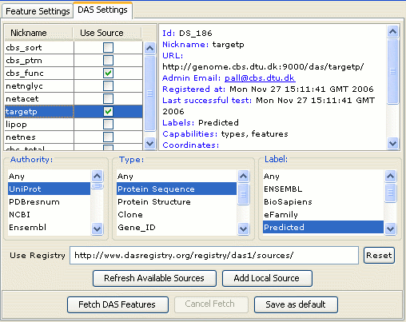

DAS Settings
Jalview can retrieve and visualize features from many DAS sources at once. The DAS sources are discovered and selected via the DAS settings panel.

The available sources are listed in the table using each source's Nickname as its identifier. Clicking on a source's entry in the table reveals more information about that service in the panel to the right. Select the tickbox in the "Use Source" column for a source to add it to the set Jalview queries for alignment and sequence features.
You can filter the visible DAS sources by authority, type and "label". You should read the DAS documentation to understand more about these values.
Updating the list of sources
When the DAS Settings panel is first opened, and when the 'Refresh source' buton is pressed, a list of DAS sources is retrieved from the DAS registry URL (set by default to the DAS registration server at http://das.sanger.ac.uk/registry/das1/sources/).
Adding your own DAS Sources
You can add your own DAS source to the list by clicking the "Add Local Source" button. Enter the URL and nickname of your additional service. It should be noted that Jalview 2.1 will not query additional sources for more information, but this will be implemented in future editions.